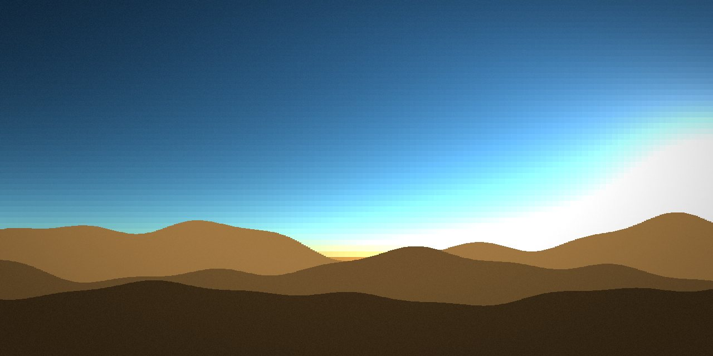
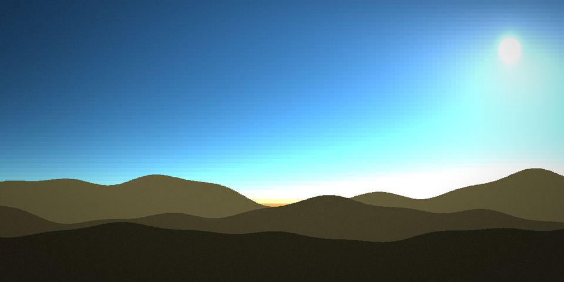
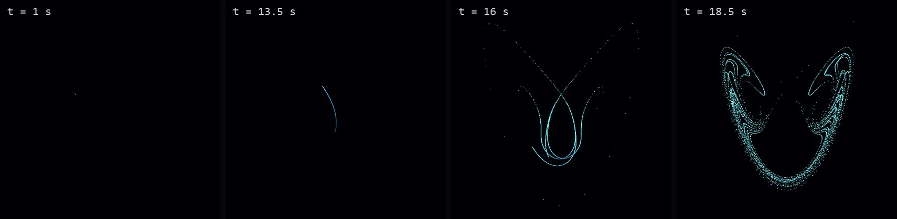
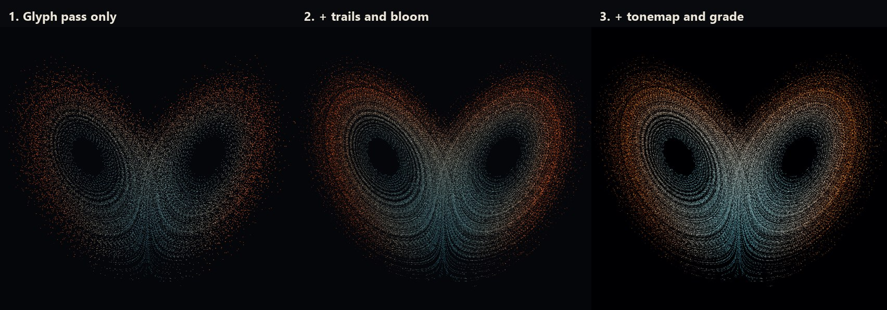
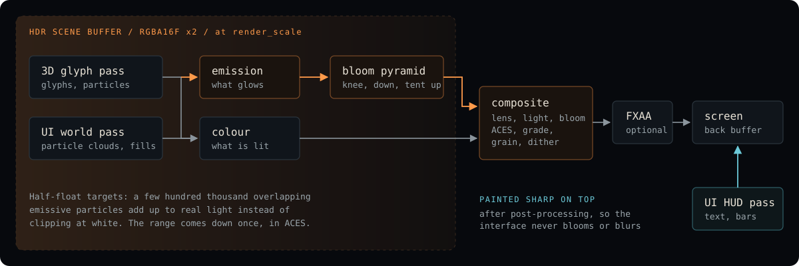
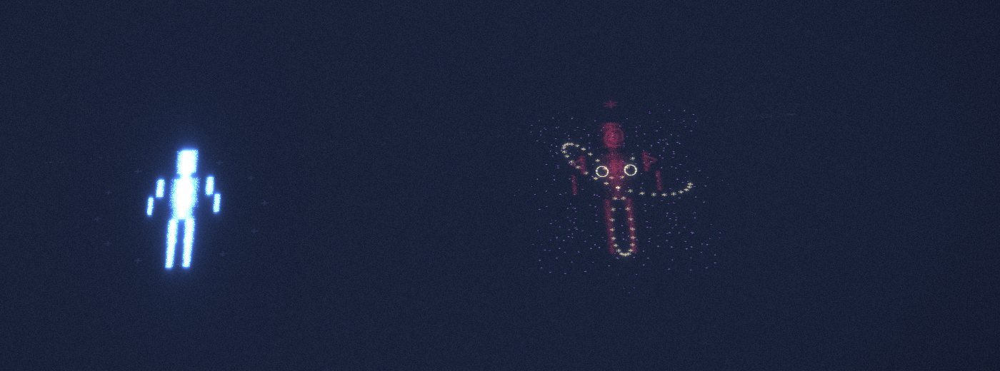
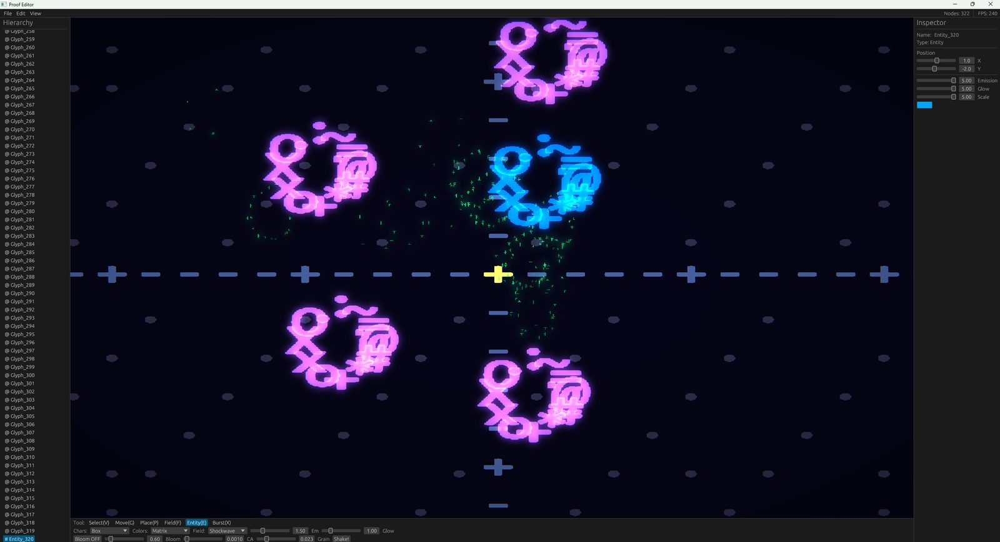

関数をアニメーションに
アトラクタ、パーリンノイズ、ロジスティック写像、コラッツ、リサージュ、マンデルブロの発散判定、ばね。どのグリフにも life_function を持たせて、位置や色を動かせます。

すべてのビジュアルが数学関数の出力である、Rust 製のレンダリングエンジン。グリフとパーティクルを微分方程式と力場で動かし、HDR で描画します。
図 1sky サンプルの 16:20 から夕暮れまで。PROOF_SHOT でフレームごとにキャプチャし、順再生と逆再生でつないでいます。この空のセルはすべて散乱積分です。
Nishita スカイ
空は 120 × 56 のセルでできています。毎フレーム、各セルについて nishita_sky::compute_sky_color が、視線方向のレイと太陽へ向かう別のレイに沿って、レイリー散乱とミー散乱（単一散乱）を積分します。
グラデーションはどこにも描いていません。午後三時の青も、日没時のオレンジの帯も、その後の深い青緑も、太陽の位置が違うだけの同じ積分です。山並みはサイン波の和で、地平線のすぐ上の空の光で照らされています。

図 2cargo run --release --example sky の実際の四十フレーム。時刻と高度はデモが出力した値そのままです。
図 3cargo run --release --example lorenz。青緑は遅く、琥珀色は速い。
ストレンジアトラクタ
各点はひとつの状態で、エンジン自前の RK4 ステップで毎フレーム進められます。二つの翼は誰かが描いたものではなく、方程式が点を運んだ先です。同じモジュールには Rossler、Chen、Halvorsen、Aizawa、Thomas、Dadras なども入っていて、どれでも力場を駆動できます。
for p in points.iter_mut() { for _ in 0..SUBSTEPS { *p = rk4_step(lorenz, *p, h); } }
クイックスタート
必要なのは stable 版の Rust と、OpenGL 3.3 対応の GPU です。Windows と macOS ではほかに何もいりません。Linux では先に ALSA のヘッダーをインストールしてください：sudo apt install libasound2-dev pkg-config。
初回ビルドはエンジン全体をコンパイルするので数分かかります。--release を付けてください。デモは毎フレーム数万個のパーティクルをシミュレートします。
git clone https://gitlab.com/mattbusel/proof-engine.git cd proof-engine cargo run --release --example sky cargo run --release --example lorenz
5,000 個の点が短い線分から出発し、ローレンツ方程式に従って動きます。リポジトリにも examples/quickstart.rs として入っています。
cargo new lorenz-demo && cd lorenz-demo cargo add proof-engine
use proof_engine::math::attractors::rk4_step; use proof_engine::prelude::*; use proof_engine::render::ui_layer::UiParticle; fn main() { let mut engine = ProofEngine::new(EngineConfig::default()); // 5,000 points in a line 2 units long, each 0.0004 from the next. let mut points: Vec<Vec3> = (0..5000) .map(|i| Vec3::new(1.0 + i as f32 * 4e-4, 1.0, 1.0)) .collect(); engine.run_ui(move |engine, dt| { // Advance every point along the Lorenz equations. for p in points.iter_mut() { *p = rk4_step(AttractorType::Lorenz, *p, dt); } // Draw them: x across, z up, centred in the window. let (w, h) = engine.render_size(); let (cx, cy, s) = (w as f32 / 2.0, h as f32 / 2.0, h as f32 / 60.0); let color = Vec4::new(0.5, 1.2, 1.6, 1.0); let dots = points .iter() .map(|p| UiParticle::new(cx + p.x * s, cy - (p.z - 25.0) * s, 3.0, 3.0, '●', color)) .collect(); engine.ui.draw_particles(dots); }); }
cargo run --release で実行。約十秒間は点がひと筋の線になって進み、その後カオスによって引き裂かれて蝶の形になります。

図 3B上のプログラムで、エンジンが 1、13.5、16、18.5 秒時点で書き出したフレーム。
中身
アトラクタ、パーリンノイズ、ロジスティック写像、コラッツ、リサージュ、マンデルブロの発散判定、ばね。どのグリフにも life_function を持たせて、位置や色を動かせます。
重力、渦、電磁場、ストレンジアトラクタ、衝撃波、潮汐、流れ、双極子。減衰は線形、逆二乗、指数、ガウスから選べます。
エンティティは、凝集力でまとまったグリフの集まりです。結合の強さは HP に連動するので、攻撃を受けるとアニメーションを再生するのではなく、実際に物質がはがれ落ちます。
半精度浮動小数点のシーンバッファ、ブルームピラミッド、ACES、レンズ効果、光芒、物質が落とす影、グレインとディザ。常設のパラメータはすべて RenderConfig のフィールドです。
SAT による剛体、ソフトボディ、オイラー法の流体。FM、フィルター、ドライブ、リバーブを備えた 48 kHz のシンセシス。サウンドはサンプリングではなく合成です。
プレートテクトニクス、侵食、気候、河川、集落、歴史。ロトカ・ヴォルテラと SIR の生態モデル。クロージャ対応のバイトコード VM。

図 4数学がフレームになるまで。実際のローレンツ積分から、サンプル自身のパレットで描いています。

図 5PROOF_HIDDEN=1 PROOF_SHOT で同じフレームを GPU から三回読み戻し、RenderConfig でブルーム、トレイル、トーンマップをオフにしたもの。

図 6毎フレーム GPU で動いている処理。スクリーン空間の物質として描かれたゲームは、画面全体にブルーム、グレーディング、グレインがかかり、その上に読みやすい HUD が乗ります。
デモ
どれも cargo run --release --example <name> で動きます。終了するにはウィンドウを閉じるか、デモに表示があれば Esc を押してください。まずは次のデモから。
galaxy3,000 個のグリフが、それぞれ独自の軌道を回ります。
strange_attractors七つのカオス系、RK4、色は速度。
math_rain列の速度はサイン関数から、ちらつきはロジスティック写像から。

図 7convergence：赤いファイターがダメージを受け、結合が崩れつつある。

図 8Proof Editor：グリフ、力場、エンティティを配置し、シーンを JSON で保存。
| サンプル | 表示内容 |
|---|---|
| sky | 山並みの上の一日。空のセルはすべて Nishita 散乱積分。Space で一時停止、上下キーで速度変更。 |
| lorenz | ローレンツアトラクタ上の 40,000 個の点を RK4 で積分し、HDR ワールドパスに描画。左右キーで視点を回転。 |
| galaxy | 約 3,000 個のグリフが四本の渦状腕に並び、それぞれ独自の軌道を回る。中心は高温に輝き、星雲の塵が漂う。 |
| strange_attractors | Lorenz、Rossler、Chen、Halvorsen、Aizawa、Thomas、Dadras を並べて表示、各 1,500 点。Space で一時停止。 |
| math_rain | 数学記号のデジタルレイン。速度はサイン関数から、ちらつきはロジスティック写像から。 |
| quickstart | 上のプログラム。5,000 個の点がカオスによって引き裂かれ、ローレンツの蝶になる。 |
| convergence | 周回カメラのあるアリーナで戦う、パーティクルでできた二体のファイター。攻撃を受けると物質がはがれ落ちる。 |
| supernova | 恒星が脈動し、崩壊し、爆発して、ローレンツ星雲に落ち着く。 |
| hello_glyph | 最小のプログラム。呼吸する @ ひとつと重力場。 |
| colossus | GPU 密度エンティティ。十六本のボーンから数百万個のパーティクル。高性能な GPU が必要です。 |
| apotheosis | 符号付き距離場（SDF）で組み立てたキャラクター、約 10.8M 個のパーティクル。OpenGL 4.3 が必要です。 |
キャプチャ
Proof Engine で作ったプログラムなら、コードを一切変えずに自分のフレームを書き出せます。ポストプロセス後の画像を GPU から直接読み戻します。PROOF_HIDDEN=1 を付けるとウィンドウは非表示のままフォーカスも奪わないので、PC を使いながら実行できます。
このページのデモ画像と動画は、すべてこの方法で書き出しました。
PROOF_HIDDEN=1 PROOF_FIXED_DT=60 \
PROOF_SHOT='frames/f_{n}.bmp' PROOF_SHOT_AT=560 \
PROOF_SHOT_EVERY=2 PROOF_SHOT_COUNT=240 \
cargo run --release --example sky
PROOF_FIXED_DT はシミュレーションを固定レートで進めるので、各フレームのキャプチャにどれだけ時間がかかっても、連番は実際の速度で再生されます。サイズは PROOF_WINDOW=1920x1080 で指定します。